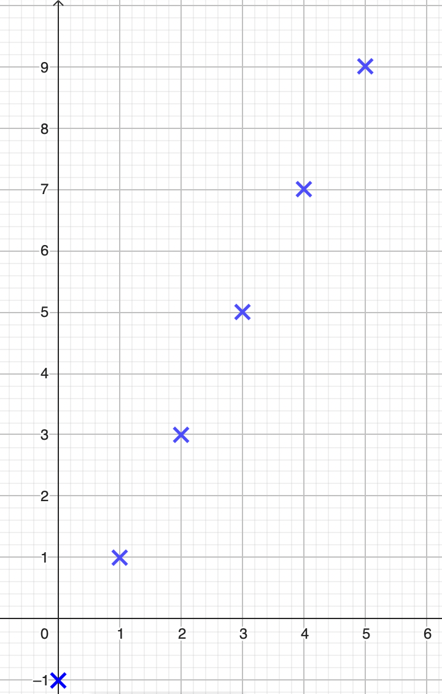
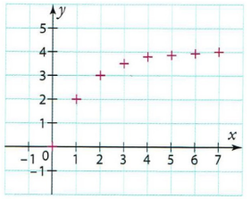
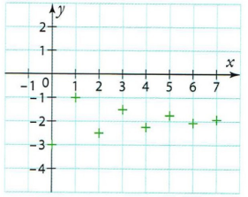
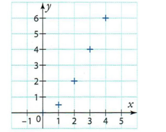
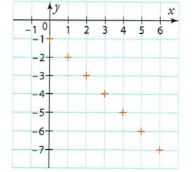
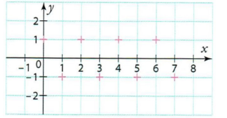

Les suites numériques
1 Généralités sur les suites
1.1 Définition
Une suite u, notée aussi (u_n)_{n\in\mathbb{N}}, est une fonction définie sur \mathbb{N} ou une partie de \mathbb{N} et à valeurs dans \mathbb{R}.
u : \left\{ \begin{array}{ccc} \mathbb{N}& \to & \mathbb{R}\\ n & \mapsto & u(n)=u_n \end{array} \right.
Les termes de la suite se notent u_0, u_1, \dots, u_n.
u_n est le terme d’indice n.
Soit u la suite définie sur \mathbb{N} par u_n=2n-1.
Le terme d’indice 0 (le premier terme !) est u_0=2\times 0-1=-1.
Le terme d’indice 1 est u_1=2\times 1-1=1.
1.2 Les différents modes de génération d’une suite
1.2.1 Suites définies à partir d’une fonction (mode explicite)
Une suite u est définie par une formule explicite lorsque u_n s’exprime en fonction de l’entier n. On note alors u_n=f(n) où f est une fonction.
La suite (u_n) définie sur \mathbb{N} par u_n=2n-1 est définie par l’expression du terme général en fonction de n. On peut alors définir la fonction associée f : x \mapsto 2x-1 et écrire u_n=f(n).
Dans ce cas, chaque terme peut alors se calculer indépendamment des autres en remplaçant n par sa valeur dans l’expression. On peut aussi utiliser le tableau de valeurs de la fonction associée.
Les suites (u_n), (v_n) et (w_n) définies sur \mathbb{N} par u_n=2n+1, v_n=2^n et w_n=n^3.
u_{100}=2\times 100+1=201
v_5=2^5=32
w_{20}=20^3=8000
1.2.2 Suites définies par une relation de récurrence (mode récurrent)
Une suite u est définie par une relation de récurrence lorsqu’elle est définie par la donnée de :
- son (ou ses) premier(s) terme(s) ;
- une relation permettant de calculer un terme à partir d’un ou plusieurs termes précédents.
On note alors u_{n+1}=f(u_n) où f est une fonction.
Dans ce cas, chaque terme s’obtient de proche en proche. C’est pourquoi la connaissance du terme initial est indispensable.
Soit (u_n) la suite définie sur \mathbb{N} par
\begin{cases} u_0=-5 \\ u_{n+1}=2u_n+3 \end{cases}
Ses premiers termes sont :
u_0=-5
u_1=2\times u_0+3=-7
u_2=2\times u_1+3=-11
1.3 Représentation graphique
Dans un repère, la représentation graphique d’une suite (u_n)_{n\in\mathbb{N}} est l’ensemble des points de coordonnées (n;u_n) pour n\in\mathbb{N}.
1.3.1 Suites définies à partir d’une fonction (mode explicite)
Soit (u_n)_{n\in\mathbb{N}} la suite définie par u_n=2n-1.
On commence par remplir le tableau de valeurs :
| n | 0 | 1 | 2 | 3 | 4 | 5 |
|---|---|---|---|---|---|---|
| u_n | -1 | 1 | 3 | 5 | 7 | 9 |
On a alors ce nuage de points associé au tableau :

On peut définir la suite u à l’aide de sa fonction associée. Pour tout n\in\mathbb{N}, u_n=f(n) avec f(x)=2x-1.
f est une fonction affine, sa représentation est donc une droite. Pour tracer la représentation de la suite, on trace les points de cette droite qui ont pour abscisse un entier naturel.
1.3.2 Suites définies par une relation de récurrence
On considère la suite u telle que u_{n+1}=f(u_n) où f est une fonction.
On construit de proche en proche les termes de la suite u en se servant de la courbe représentative de la fonction f appelée (C) et de la droite (\Delta) d’équation y=x :
- placer u_0 sur l’axe des abscisses ;
- construire u_1=f(u_0) sur l’axe des ordonnées ;
- reporter u_1 sur l’axe des abscisses en utilisant (\Delta) ;
- recommencer.
Soit (u_n) la suite définie sur \mathbb{N} par
\begin{cases} u_0=-4 \\ u_{n+1}=1+\dfrac{1}{2}u_n \end{cases}
Construire les premiers termes de la suite (u_n) puis conjecturer les variations et la limite en +\infty.
Soit f la fonction définie sur [0;+\infty[ par f(x)=1+\dfrac{1}{2}x. Ainsi, f(u_n)=u_{n+1}.
(C) : y=\dfrac{1}{2}x+1
(\Delta) : y=x (appelée première bissectrice)

Grâce à cette représentation graphique, on peut conjecturer :
- la suite (u_n) est strictement croissante sur \mathbb{N} ;
- \lim\limits_{n\to+\infty}u_n=2.
Ces conjectures doivent bien sûr être confirmées ou infirmées.
Soit (u_n) la suite définie sur \mathbb{N} par
\begin{cases} u_0=-\dfrac{1}{2} \\ u_{n+1}=\dfrac{2}{1+u_n} \end{cases}
Soit f la fonction définie sur [0;+\infty[ par f(x)=\dfrac{2}{1+x}. Ainsi, f(u_n)=u_{n+1}.
(C) : y=\dfrac{2}{1+x}
(\Delta) : y=x
Grâce à cette représentation graphique, on peut conjecturer :
- la suite (u_n) est non monotone sur \mathbb{N} ;
- \lim\limits_{n\to+\infty}u_n=1.

2 Sens de variation d’une suite
2.1 Définitions
Une suite (u_n)_{n\in\mathbb{N}} est croissante si pour tout n\in\mathbb{N}, u_{n+1}\geqslant u_n.
Une suite (u_n)_{n\in\mathbb{N}} est décroissante si pour tout n\in\mathbb{N}, u_{n+1}\leqslant u_n.
Une suite (u_n)_{n\in\mathbb{N}} est constante si pour tout n\in\mathbb{N}, u_{n+1}=u_n.
Une suite (u_n)_{n\in\mathbb{N}} croissante ou décroissante est dite monotone.
On définit de même une suite strictement croissante (ou strictement décroissante) en utilisant une inégalité stricte.
2.2 Étude du sens de variation
Lorsqu’on cherche à déterminer les variations d’une suite (u_n)_{n\in\mathbb{N}} on peut :
étudier le signe de la différence u_{n+1}-u_n :
- si u_{n+1}-u_n\geqslant 0 alors u_{n+1}\geqslant u_n et donc (u_n) est croissante ;
- si u_{n+1}-u_n\leqslant 0 alors u_{n+1}\leqslant u_n et donc (u_n) est décroissante.
si la suite est définie par u_n=f(n) où f est une fonction connue, étudier les variations de f sur [0;+\infty[ :
- si f est croissante alors (u_n) est croissante ;
- si f est décroissante alors (u_n) est décroissante.
si la suite est toujours strictement positive, comparer le quotient \dfrac{u_{n+1}}{u_n} à 1 :
- si \dfrac{u_{n+1}}{u_n}\geqslant 1 alors (u_n) est croissante ;
- si \dfrac{u_{n+1}}{u_n}\leqslant 1 alors (u_n) est décroissante.
- Soit (u_n)_{n\in\mathbb{N}} la suite définie par u_n=\dfrac{n+1}{2^n}.
- Soit (v_n)_{n\in\mathbb{N}} la suite définie par v_n=\dfrac{3}{n+2}.
- Soit (w_n)_{n\in\mathbb{N}} la suite définie par w_n=\dfrac{3^n}{4^{n+2}}.
- Soit (z_n)_{n\in\mathbb{N}} la suite définie par z_n=(-1)^n.
1. Soit (u_n)_{n\in\mathbb{N}} la suite définie par u_n=\dfrac{n+1}{2^n}.
\begin{align*} u_{n+1}-u_n&=\dfrac{n+2}{2^{n+1}}-\dfrac{n+1}{2^n} \\ &=\dfrac{n+2-2(n+1)}{2^{n+1}} \\ &=\dfrac{n+2-2n-2}{2^{n+1}} \\ &=\dfrac{-n}{2^{n+1}} \end{align*}
Comme 2^{n+1}>0 et -n\leqslant 0, alors u_{n+1}-u_n\leqslant 0.
La suite (u_n)_{n\in\mathbb{N}} est donc décroissante sur \mathbb{N}.
2. Soit (v_n)_{n\in\mathbb{N}} la suite définie par v_n=\dfrac{3}{n+2}.
Soit f la fonction associée à (v_n) définie sur [0;+\infty[ par f(x)=\dfrac{3}{x+2}.
La fonction f est dérivable sur \mathbb{R}^+ et f'(x)=-\dfrac{3}{(x+2)^2}<0.
Ainsi la fonction f est décroissante sur \mathbb{R}^+, et donc la suite (v_n)_{n\in\mathbb{N}} est décroissante.
3. Soit (w_n)_{n\in\mathbb{N}} la suite définie par w_n=\dfrac{3^n}{4^{n+2}}.
(w_n)_{n\in\mathbb{N}} est à termes strictement positifs.
\begin{align*} \dfrac{w_{n+1}}{w_n}&=\dfrac{\dfrac{3^{n+1}}{4^{n+3}}}{\dfrac{3^n}{4^{n+2}}} \\ &=\dfrac{3^{n+1}}{4^{n+3}}\times\dfrac{4^{n+2}}{3^n} \\ &=\dfrac{3^{n+1}}{3^n}\times\dfrac{4^{n+2}}{4^{n+3}} \\ &=3\times\dfrac{1}{4} \\ &=\dfrac{3}{4} \end{align*}
Ainsi, pour tout n entier naturel, on a \dfrac{w_{n+1}}{w_n}<1 donc la suite (w_n)_{n\in\mathbb{N}} est strictement décroissante.
4. Soit (z_n)_{n\in\mathbb{N}} la suite définie par z_n=(-1)^n.
Les termes de la suite (z_n) valent alternativement 1 et -1.
Donc, cette suite n’est pas monotone.
3 Suites arithmétiques
3.1 Définition et expression du terme général
Une suite (u_n)_{n\in\mathbb{N}} est arithmétique s’il existe un réel r, appelé raison de la suite, tel que pour tout n\in\mathbb{N}, on a u_{n+1}=u_n+r.
Soit (u_n)_{n\in\mathbb{N}} une suite arithmétique de raison r.
Pour tout n\in\mathbb{N}, u_n=u_0+rn.
Pour tout n\in\mathbb{N} et pour tout p\in\mathbb{N}, u_n=u_p+r(n-p).
Soit (u_n)_{n\in\mathbb{N}} une suite arithmétique de raison r.

Pour démontrer qu’une suite (u_n)_{n\in\mathbb{N}} est arithmétique, on peut :
- montrer que, pour tout n\in\mathbb{N}, u_{n+1}-u_n est égal à une constante r ;
- montrer que, pour tout n\in\mathbb{N}, u_n peut s’écrire sous la forme a\times n+b avec a et b deux réels.
Pour démontrer qu’une suite (u_n)_{n\in\mathbb{N}} n’est pas arithmétique, on peut calculer les premiers termes de la suite et comparer les différences de deux termes consécutifs.
Les suites suivantes sont-elles arithmétiques ?
Soit (u_n)_{n\in\mathbb{N}} la suite définie par
\begin{cases} u_0=1 \\ u_{n+1}=(u_n+1)^2-u_n^2-u_n \end{cases}
Soit (v_n)_{n\in\mathbb{N}} la suite définie par v_n=(n+1)^2-(n-2)^2.
Soit (w_n)_{n\in\mathbb{N}} la suite définie par
\begin{cases} w_0=1 \\ w_{n+1}=\dfrac{w_n}{1+w_n} \end{cases}
1. Soit n\in\mathbb{N}.
\begin{align*} u_{n+1}-u_n&=(u_n+1)^2-u_n^2-u_n-u_n \\ &=u_n^2+2u_n+1-u_n^2-2u_n \\ &=1 \end{align*}
Donc la suite (u_n) est arithmétique de raison r=1.
2. Soit n\in\mathbb{N}.
\begin{align*} v_n&=(n+1)^2-(n-2)^2 \\ &=n^2+2n+1-(n^2-4n+4) \\ &=6n-3 \end{align*}
Donc la suite (v_n) est arithmétique de raison r=6 et de premier terme v_0=-3.
3. w_0=1, w_1=\dfrac{1}{2} et w_2=\dfrac{1}{3}.
w_1-w_0=-\dfrac{1}{2} et w_2-w_1=-\dfrac{1}{6}.
Donc w_1-w_0\neq w_2-w_1.
Ainsi, la suite (w_n) n’est pas arithmétique.
3.2 Sens de variation
Soit (u_n)_{n\in\mathbb{N}} une suite arithmétique de raison r.
- Si r>0, alors la suite est strictement croissante ;
- Si r<0, alors la suite est strictement décroissante ;
- Si r=0, alors la suite est constante.
Soit (u_n)_{n\in\mathbb{N}} une suite arithmétique de raison r.
Pour tout n\in\mathbb{N}, u_{n+1}-u_n=r.
- Si r>0, alors u_{n+1}-u_n>0 et donc la suite est strictement croissante ;
- Si r<0, alors u_{n+1}-u_n<0 et donc la suite est strictement décroissante ;
- Si r=0, alors u_{n+1}-u_n=0 et donc la suite est constante.
Soit (u_n)_{n\in\mathbb{N}} la suite définie par u_{n+1}=3+u_n.
La suite est arithmétique de raison r=3>0. Donc la suite (u_n) est strictement croissante.
Soit (v_n)_{n\in\mathbb{N}} la suite définie par v_{n+1}+2=v_n.
La suite est arithmétique de raison r=-2<0. Donc la suite (v_n) est strictement décroissante.
3.3 Somme des premiers entiers
Pour tout n\in\mathbb{N}^*,
\sum_{i=1}^n i=1+2+3+\dots+n=\dfrac{n(n+1)}{2}
Méthode de Gauss (mathématicien allemand du XVIIIe-XIXe siècle).
On écrit la somme dans l’ordre croissant des termes puis dans l’ordre décroissant des termes :
\begin{align*} S&=1+2+3+\dots+(n-2)+(n-1)+n \\ S&=n+(n-1)+(n-2)+\dots+3+2+1 \end{align*}
Par somme, membre à membre, on obtient :
\begin{align*} 2S&=(1+n)+(1+n)+(1+n)+\dots+(1+n)+(1+n)+(1+n) \\ 2S&=n(n+1) \end{align*}
Donc S=\dfrac{n(n+1)}{2}.
Calculer la somme S=2+5+8+11+14+\dots+296.
On considère la somme S=2+5+8+11+14+\dots+296.
On pose
(u_n)_{n\in\mathbb{N}} : \begin{cases} u_0=2 \\ u_{n+1}=u_n+3 \end{cases}
S est la somme des 99 premiers termes de la suite (u_n).
S=u_0+u_1+u_2+u_3+\dots+u_{98}
S=u_0+(u_0+3)+(u_0+2\times 3)+(u_0+3\times 3)+\dots+(u_0+98\times 3) On exprime chaque terme u_n en fonction de n
S=99u_0+3(1+2+3+\dots+98) On regroupe les termes u_0 et on factorise par le facteur commun (la raison)
S=99\times 2+3\times\dfrac{98\times 99}{2} On applique la formule de Gauss
S=14751
4 Suites géométriques
4.1 Définition et expression du terme général
Une suite (u_n)_{n\in\mathbb{N}} est géométrique s’il existe un réel q, appelé raison de la suite, tel que pour tout n\in\mathbb{N}, on a u_{n+1}=q\times u_n.
Soit (u_n)_{n\in\mathbb{N}} une suite géométrique de raison q.
Pour tout n\in\mathbb{N}, u_n=u_0\times q^n.
Pour tout n\in\mathbb{N} et pour tout p\in\mathbb{N}, u_n=u_p\times q^{n-p}.
Soit (u_n)_{n\in\mathbb{N}} une suite géométrique de raison q.

Pour démontrer qu’une suite (u_n)_{n\in\mathbb{N}} est géométrique, on peut :
- montrer que, pour tout n\in\mathbb{N}, u_{n+1}=q\times u_n ;
- montrer que, pour tout n\in\mathbb{N}, \dfrac{u_{n+1}}{u_n} est égal à une constante q si tous les termes de la suite sont non nuls ;
- montrer que, pour tout n\in\mathbb{N}, u_n peut s’écrire sous la forme a\times b^n avec a et b des réels.
Pour démontrer qu’une suite (u_n)_{n\in\mathbb{N}} n’est pas géométrique, on peut calculer les premiers termes de la suite et comparer les quotients de deux termes consécutifs.
Les suites suivantes sont-elles géométriques ?
- Soit (u_n)_{n\in\mathbb{N}} la suite définie par u_0=2 et u_{n+1}=\dfrac{u_n}{2}.
- Soit (v_n)_{n\in\mathbb{N}} la suite définie par v_n=\dfrac{1}{4^n}.
- Soit (w_n)_{n\in\mathbb{N}} la suite définie par w_n=\dfrac{1}{n+1}.
1. Soit n\in\mathbb{N}, u_{n+1}=u_n\times\dfrac{1}{2}.
Donc la suite (u_n) est géométrique de raison q=\dfrac{1}{2}.
2. Soit n\in\mathbb{N}, v_n\neq 0 et
\dfrac{v_{n+1}}{v_n}=\dfrac{\dfrac{1}{4^{n+1}}}{\dfrac{1}{4^n}}=\dfrac{1}{4^{n+1}}\times\dfrac{4^n}{1}=\dfrac{1}{4}
Donc la suite (v_n) est géométrique de raison q=\dfrac{1}{4}.
3. w_0=1, w_1=\dfrac{1}{2} et w_2=\dfrac{1}{3}.
\dfrac{w_1}{w_0}=\dfrac{1}{2} et \dfrac{w_2}{w_1}=\dfrac{2}{3}.
Donc \dfrac{w_1}{w_0}\neq\dfrac{w_2}{w_1}.
Ainsi, la suite (w_n) n’est pas géométrique.
4.2 Sens de variation
Soit (u_n)_{n\in\mathbb{N}} une suite géométrique de raison q et de premier terme u_0\neq 0.
- Si q>1 :
- si u_0>0, alors la suite est strictement croissante ;
- si u_0<0, alors la suite est strictement décroissante.
- Si 0<q<1 :
- si u_0>0, alors la suite est strictement décroissante ;
- si u_0<0, alors la suite est strictement croissante.
- Si q=0 ou q=1, alors la suite est constante.
- Si q<0, alors la suite n’est pas monotone.
Soit n\in\mathbb{N},
u_{n+1}-u_n=u_0\times q^{n+1}-u_0\times q^n=u_0\times q^n(q-1)
- Si q>1, alors q-1>0 et q^n>0 :
- si u_0>0, alors u_{n+1}-u_n>0 et donc la suite est strictement croissante ;
- si u_0<0, alors u_{n+1}-u_n<0 et donc la suite est strictement décroissante.
- Si 0<q<1, alors q-1<0 et q^n>0 :
- si u_0>0, alors u_{n+1}-u_n<0 et donc la suite est strictement décroissante ;
- si u_0<0, alors u_{n+1}-u_n>0 et donc la suite est strictement croissante.
- Si q=0 ou q=1, alors u_{n+1}-u_n=0 et donc la suite est constante.
- Si q<0, alors les termes de la suite sont alternativement positifs et négatifs et donc la suite n’est pas monotone.
Étudier la monotonie des suites suivantes :
- Soit (u_n)_{n\in\mathbb{N}} la suite définie par u_0=2 et u_{n+1}=2u_n.
- Soit (v_n)_{n\in\mathbb{N}} la suite définie par v_0=-5 et v_{n+1}=0{,}5\,v_n.
1. Soit (u_n)_{n\in\mathbb{N}} la suite définie par u_0=2 et u_{n+1}=2u_n.
La suite (u_n) est géométrique de raison q=2>1 et de premier terme u_0=2>0.
Donc la suite (u_n) est croissante.
2. Soit (v_n)_{n\in\mathbb{N}} la suite définie par v_0=-5 et v_{n+1}=0{,}5\,v_n.
La suite (v_n) est géométrique de raison q=0{,}5\in\,]0;1[ et de premier terme v_0=-5<0.
Donc la suite (v_n) est croissante.
4.3 Somme des premières puissances
Pour tout réel q\neq 1 et pour tout n\in\mathbb{N}^*,
\sum_{i=0}^n q^i=1+q+q^2+\dots+q^n=\dfrac{1-q^{n+1}}{1-q}
\begin{align*} S&=1+q+q^2+\dots+q^n \\ qS&=q+q^2+q^3+\dots+q^{n+1} \end{align*}
On soustrait les deux égalités, membre à membre, et on obtient :
S-qS=1+q+q^2+\dots+q^n-q-q^2-q^3-\dots-q^{n+1}
Donc S-qS=1-q^{n+1}.
Comme q\neq 1 alors S=\dfrac{1-q^{n+1}}{1-q}.
Calculer la somme S=4-8+16-32+64-\dots+4096-8192.
\begin{align*} S&=(-2)^2+(-2)^3+(-2)^4+(-2)^5+(-2)^6+\dots+(-2)^{12}+(-2)^{13} \\ &=(-2)^2\left(1+(-2)+(-2)^2+(-2)^3+(-2)^4+\dots+(-2)^{11}\right) \\ &=4\times\dfrac{1-(-2)^{12}}{1-(-2)} \\ &=-5460 \end{align*}
On peut aussi poser
(u_n)_{n\in\mathbb{N}} : \begin{cases} u_0=4 \\ u_{n+1}=-2u_n \end{cases}
et S est alors la somme des 12 premiers termes de la suite (u_n).
5 Notion intuitive de limite d’une suite
5.1 Limite finie
Une suite (u_n) a pour limite un réel l lorsque n tend vers +\infty si les termes u_n deviennent tous aussi proches de l que l’on veut en prenant n suffisamment grand.
On dit que (u_n) converge vers l et on note \lim\limits_{n\to+\infty}u_n=l.

On observe que les termes successifs de (u_n) semblent se rapprocher d’une valeur limite : 4. On dit alors que la suite (u_n) tend vers 4 lorsque n tend vers +\infty et on note \lim\limits_{n\to+\infty}u_n=4.

On observe que les termes successifs de (u_n) semblent se rapprocher d’une valeur limite : -2. On dit alors que la suite (u_n) tend vers -2 lorsque n tend vers +\infty et on note \lim\limits_{n\to+\infty}u_n=-2.
5.2 Limite infinie
Une suite (u_n) a pour limite +\infty (respectivement -\infty) lorsque n tend vers +\infty si les termes u_n deviennent tous aussi grands (respectivement petits) que l’on veut en prenant n suffisamment grand.
On dit que (u_n) diverge et on note \lim\limits_{n\to+\infty}u_n=+\infty (respectivement -\infty).

On observe que les termes successifs de (u_n) semblent être de plus en plus grands. On dit alors que la suite (u_n) tend vers +\infty lorsque n tend vers +\infty et on note \lim\limits_{n\to+\infty}u_n=+\infty.

On observe que les termes successifs de (u_n) semblent être de plus en plus petits. On dit alors que la suite (u_n) tend vers -\infty lorsque n tend vers +\infty et on note \lim\limits_{n\to+\infty}u_n=-\infty.
5.3 Suites sans limite
Certaines suites n’ont pas de limite. On dit alors que la suite diverge.
C’est le cas de la suite (u_n) définie sur \mathbb{N} par u_n=(-1)^n. Les termes de la suite (u_n) prennent alternativement les valeurs -1 et 1.
